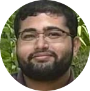

Hello!
About me
Greetings,
I am Nilava Saha, a dedicated undergraduate student enrolled at University of Texas at Austin, where I am pursuing my passion for Computer Science.
My academic journey started in the fall of 2021, and I am proud to have accumulated three years of experience in this field. I am committed to showcasing my skills and contributing to the industry.
My proficiency extends across a diverse array of programming languages, demonstrating my skill set:
- Java: 5 Years of Experience
- C: 2 Year of Experience
- HTML: 1 Year of Experience
- C#: Less than 1 Year of Experience
- C++: Less than 1 Year of Experience
In addition to these languages I have also worked with Assembly and ACL2. And having this large variety of
langauges solidifies my confidence in learning a completely new system.
Old and New Projects
Current Projects:
Development of a Toy Operating System:
1) Implementation of Virtual Memory
2) Creation of a Multi-level Filesystem
3) Incorporation of Priority Scheduling
Personal Website:
Creation of a dedicated website to showcase my achievements and current undertakings
4-Cylinder Motor Modeling:
Detailed visual analysis and modeling of a functional 4-Cylinder motor, specifically the Toyota 2JZ motor
Old Projects:
Vacuum Breaker Prototype:
1) Designed a novel Vacuum Breaker that can be seamlessly attached to a hose instead of the conventional tap connected to a house
2) Prototyping conducted using Autodesk Inventor
Residential Building CAD Modeling:
1) Utilized Autodesk Revit to create a comprehensive CAD model of a residential building
2) Developed the model based on customer specifications and delivered thorough documentation of the process
Snap-In Wire Protector:
Successfully executed a project involving the modeling and 3D printing of a Snap-In wire protector for practical applications
Professional and Acedemic Experience
I collaborated with Walmart to facilitate and oversee monetary transactions between the company and its valued customers. In addition
to this role, I had the privilege of assuming managerial responsibilities on occasion, supervising a team of 8-12 colleagues while
temporarily filling in for managers and shift leads.
Furthermore, during the summer of 2023, I took on the role of an educator, instructing a classroom of 20-23 students on STEM-related
subjects, including Electrical Engineering and programming. In tandem with teaching, I provided invaluable mentorship and guidance to these
students, offering assistance and support throughout their camp experience.
These experiences have enriched my skill set and have allowed me to contribute meaningfully in both retail and educational contexts.

Nilava Saha
Computer Science
Junior at Univeristy of Texas at Austin
nilavasaha10@gmail.com